EST. 1994 — Heritage Vintage
Timeless Stories,
Woven in Thread.
Rust & Relic began in a dusty attic in 1994, fueled by a passion for the craftsmanship of yesteryear. We curate unique vintage pieces that bridge the gap between historical heritage and modern expression.
Rescuing and Revitalizing Heritage Artistry
At Rust & Relic, our core mission is to seek out and rescue the world's most exceptional vintage garments. We believe that every thread tells a story of craftsmanship, culture, and care. By preserving these wearable archives, we ensure that the exquisite artistry and styling of past generations remain a vibrant, sustainable, and inspiring part of the modern wardrobe. Our work is a dedication to saving heritage fashion from oblivion, celebrating authentic materials, and sharing the history woven into every relic we rescue.
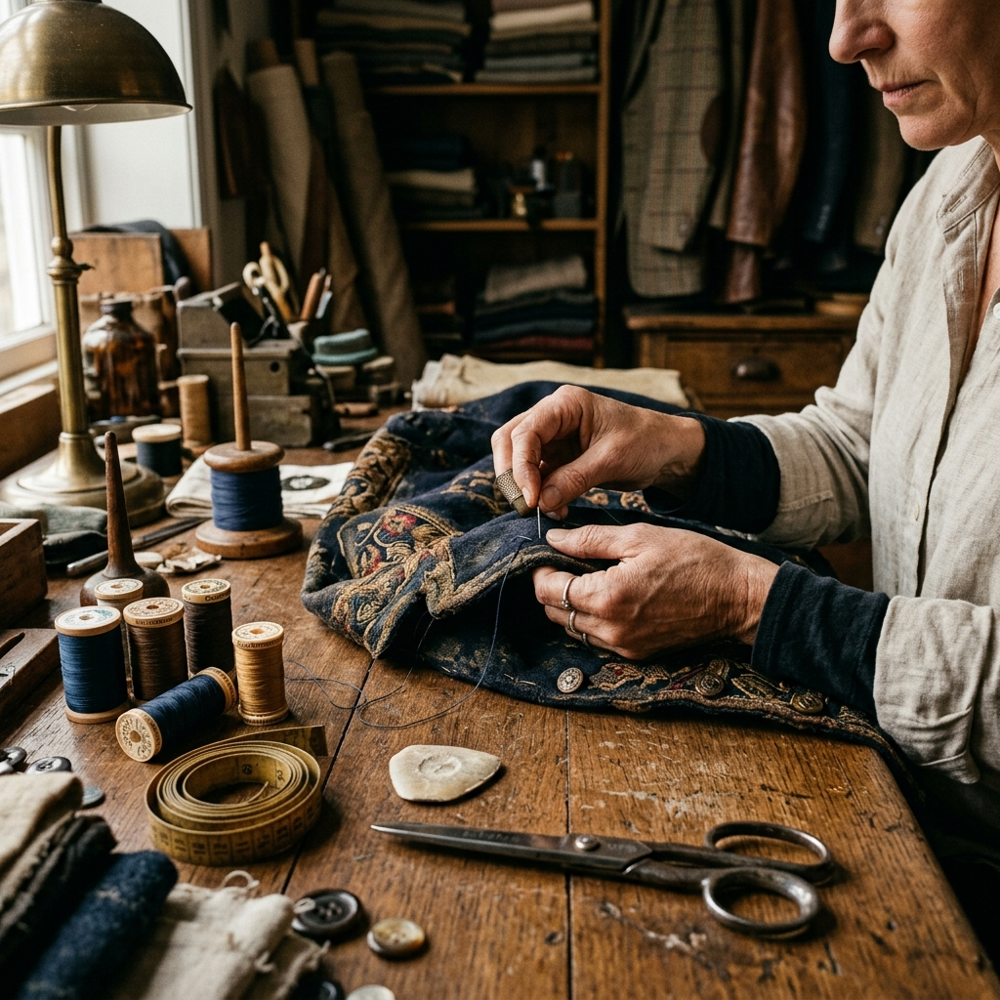
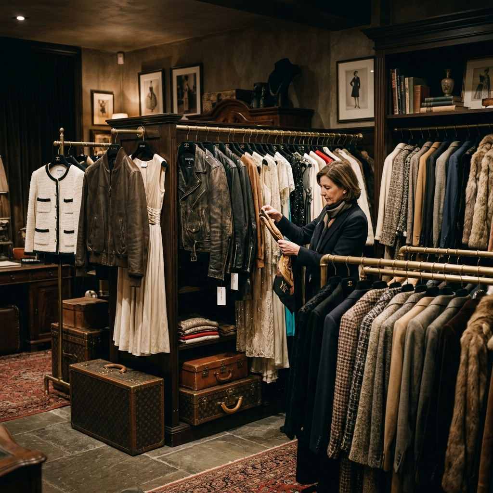
A Circular Journey for Fashion Archive
We envision a future where fashion is defined by longevity, appreciation, and a circular journey. Rather than accepting the transient nature of modern mass production, our vision champions the preservation of clothing as historical artifacts that deserve new life. We strive to foster a global community of collectors and design enthusiasts who celebrate rarity, sustainable curation, and the unique patina of time. Through our restoration archive, we aim to lead the way in creating an ethical, circular clothing ecosystem where style is truly timeless.
Conscious Curation
Our commitment to the planet is as deep as our love for the past.
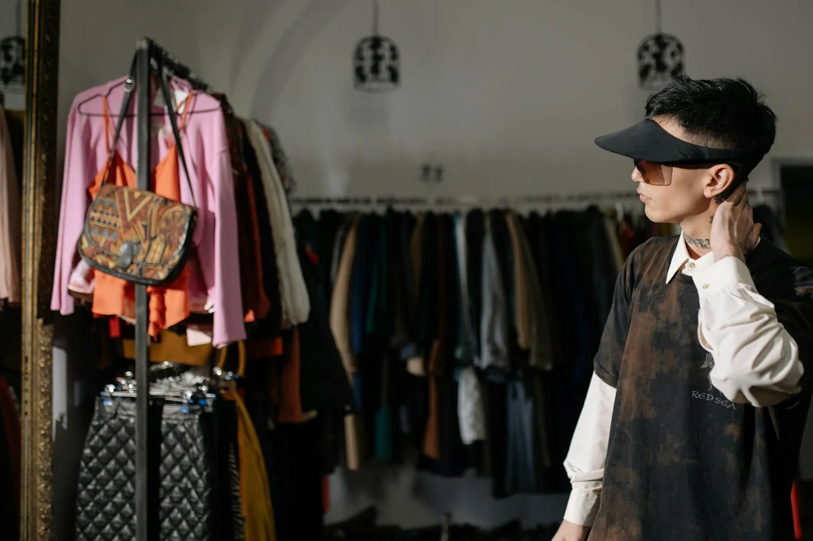
Zero-Waste Sourcing
We exclusively source pre-loved items, diverting thousands of garments from landfills annually.
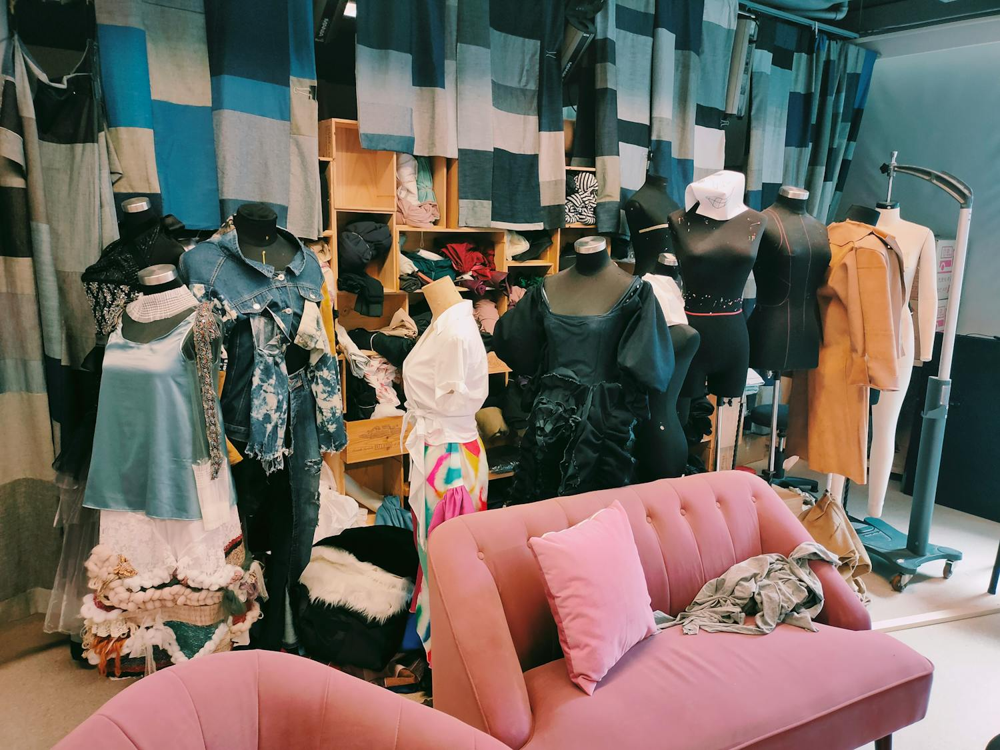
Circularity Initiative
Our restoration workshop breathes new life into damaged relics using period-correct techniques.
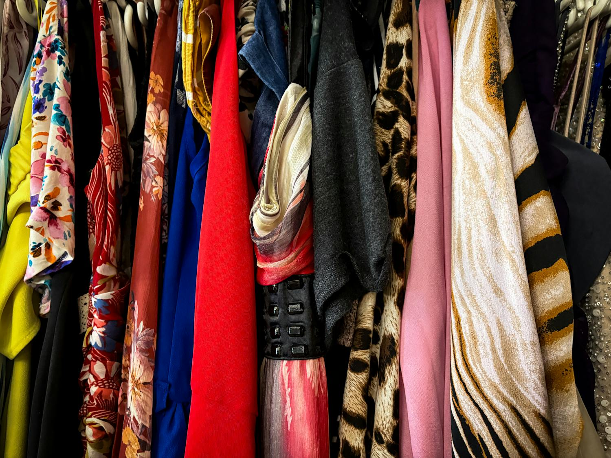
Layaway Impact
Our plan makes high-quality investment pieces accessible, discouraging "fast fashion" impulse buys.

Materials & Care
We provide detailed care guides for natural fibers to ensure your relic lasts another 50 years.

Plastic-Free Shipping
100% compostable packaging and carbon-neutral delivery options for every rare find.

Measurable Goals
Targeting 50,000 garments rescued by 2027 through our expanded global sourcing network.
The Hands Behind the Heritage
Our team of specialists lives and breathes the history of fashion.
Elias Thorne
Founder & Lead Archivist
With 30 years in the field, Elias specializes in early 20th-century workwear and military garments.

Sarah Jenkins
Head of Sourcing
Sarah travels the globe uncovering hidden treasures from estate sales and rural liquidations to our racks.
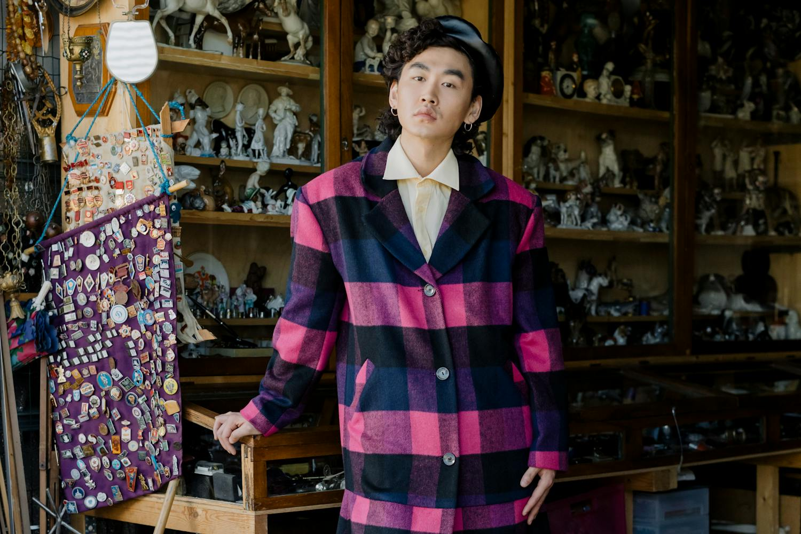
Marcus Vane
Curatorial Expert
Marcus oversees the authentication process, ensuring every piece meets our rigorous vintage standards.
Collector Chronicles
"The 1950s leather jacket I found here is a masterpiece. The personalized alerts caught it within minutes of listing. Truly a curator's dream."
"The layaway plan allowed me to secure a museum-quality Victorian gown without the financial stress. The care instructions were invaluable."
"Sustainability is key for me. Knowing my purchase supports circularity while owning a unique piece of history is the ultimate luxury."
"Rust & Relic isn't just a store, it's an education. Every piece comes with a provenance note that makes you feel like a guardian."
"The curation is unmatched. I've found archival pieces here that I couldn't find anywhere else in the world. Exceptional service."
The Archive
A glimpse into our most iconic acquisitions and restorations.

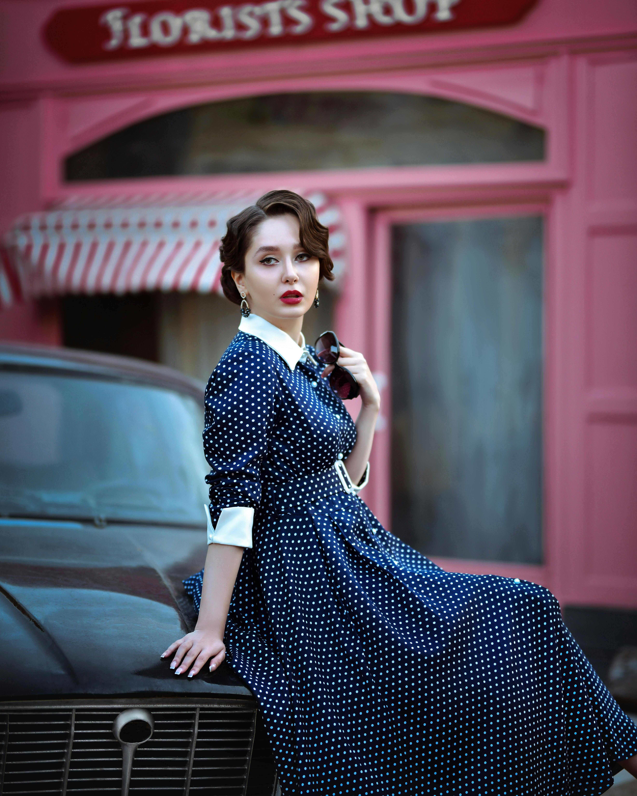
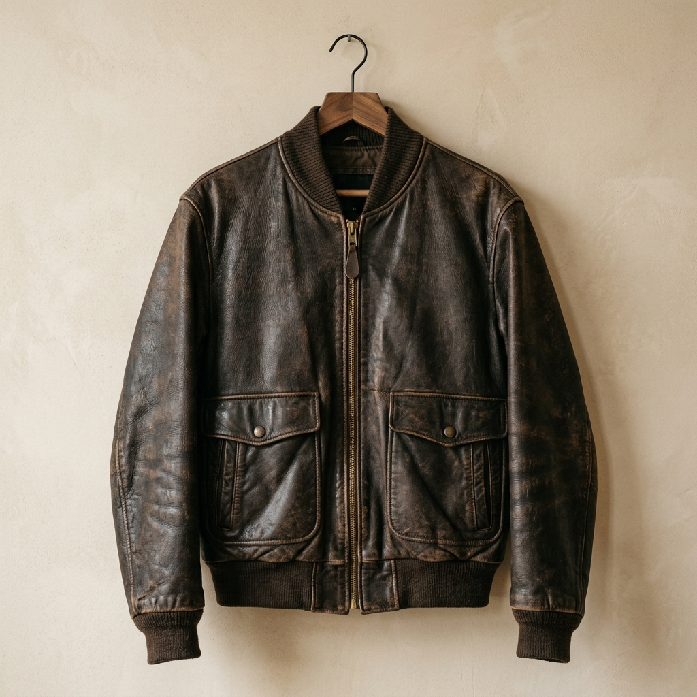
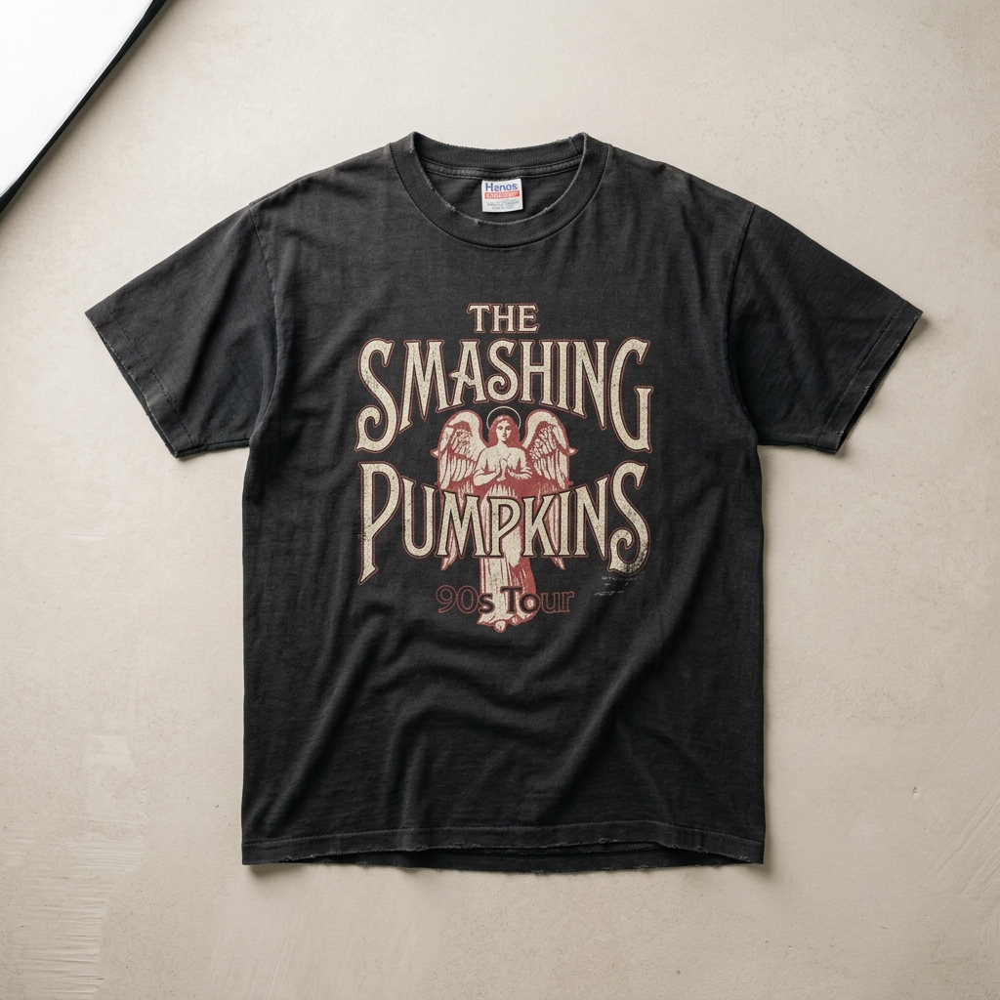
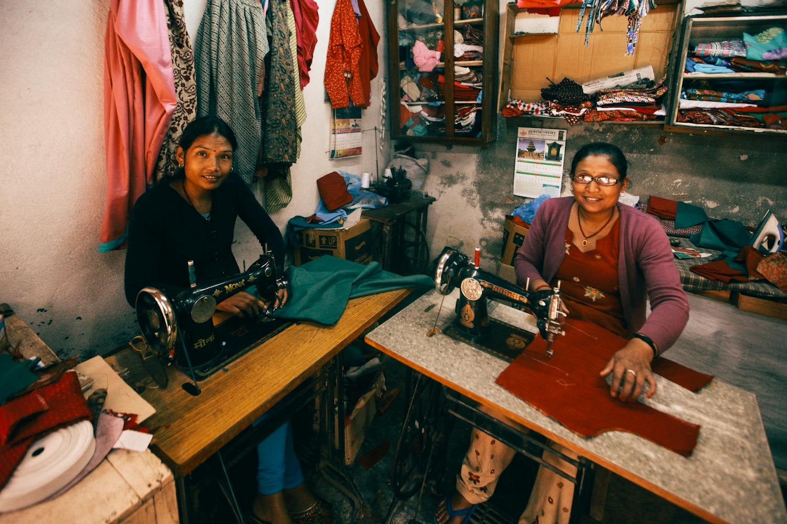


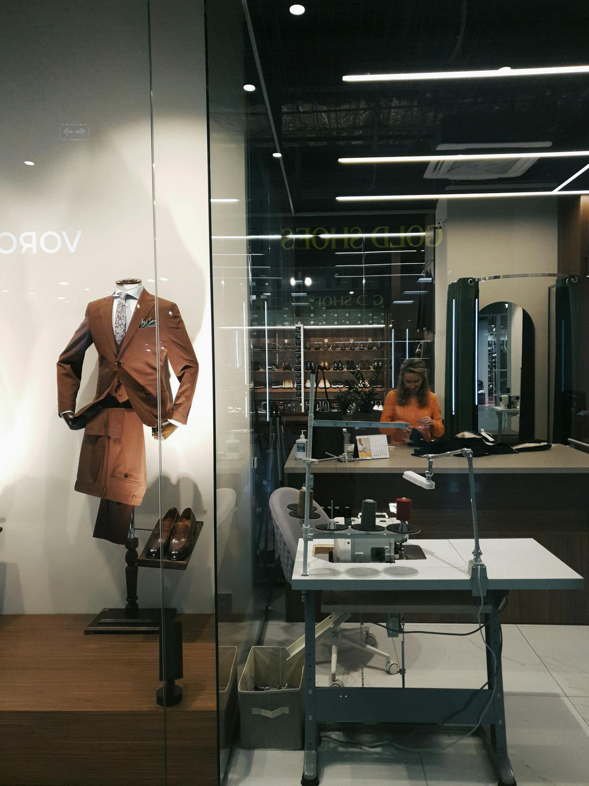